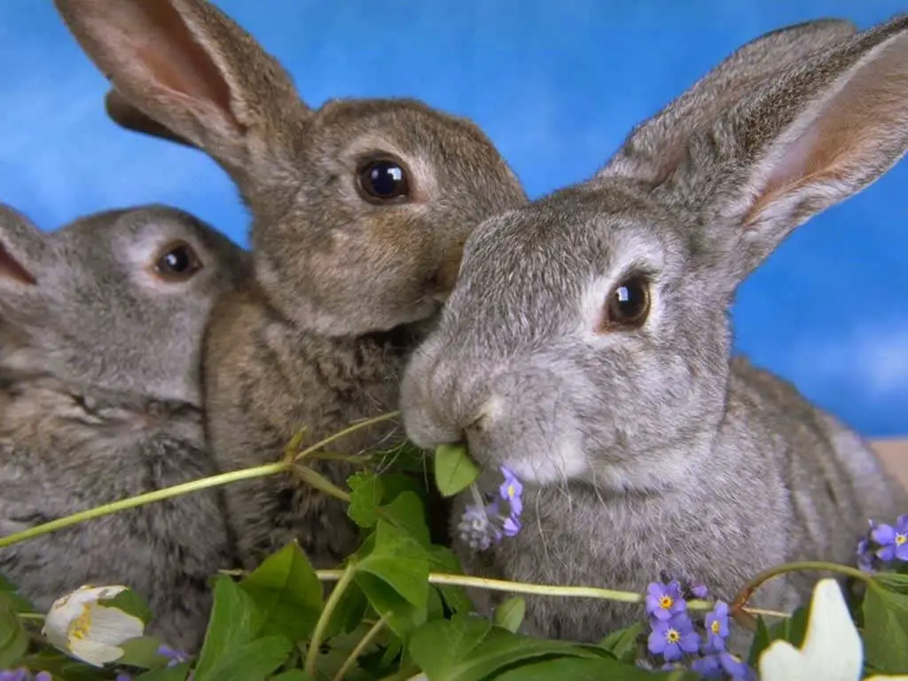

Informações sobre coelhos
Aqui você encontrará informações sobre coelhos como animais de estimação e como cuidar deles.
Cuidados com coelhos
- Dieta adequada: Coelhos precisam de uma alimentação rica em feno, que é a base da sua dieta, complementada com ração específica para coelhos e vegetais frescos.
- Espaço para se exercitar: Eles necessitam de um ambiente seguro e amplo para se movimentar diariamente, seja uma gaiola espaçosa ou uma área de convivência protegida.
- Higiene: A limpeza regular do local onde vivem, especialmente da caixa de areia, é fundamental para evitar doenças.
- Saúde: Consultas veterinárias e vacinas são necessárias, além de atenção a sinais de doenças dentárias ou digestivas, comuns em coelhos.
- Estimulação e brinquedos: Coelhos precisam de brinquedos para roer e atividades que os mantenham estimulados mentalmente, evitando o tédio.
Com os cuidados corretos, coelhos podem viver por 7 a 10 anos ou mais, sendo ótimos companheiros.